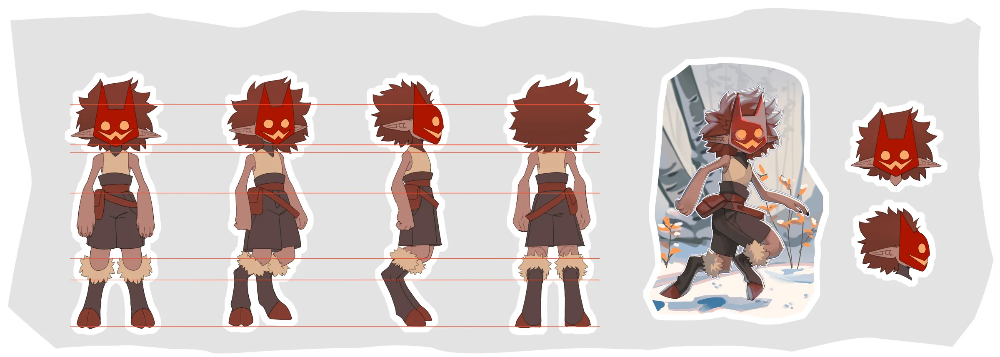
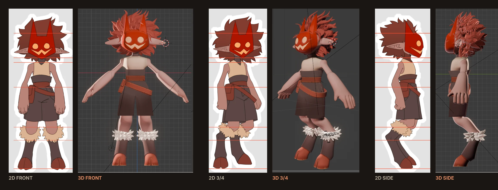
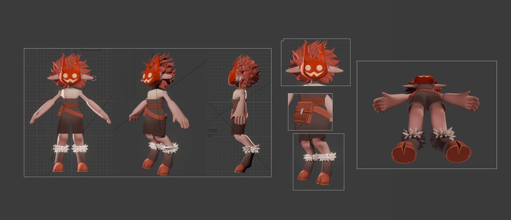

Masked Imp
A full character package for a private client: a production turnaround, a key illustration and a 3D reference model in Blender. The same character carried through 2D and 3D.Полный пакет персонажа для частного заказчика: продакшн-разворот, ключевая иллюстрация и 3D-референс в Blender. Один и тот же персонаж, проведённый через 2D и 3D.
TaskЗадача
Turn the character into references a studio can use: consistent in every view, consistent between 2D and 3D, plus one image that sells its personality.Превратить персонажа в референсы для продакшна: одинаковый во всех ракурсах, одинаковый в 2D и 3D, плюс одна картинка, которая продаёт характер.
My partМой вклад
- Turnaround: front, ¾, side, backРазворот: фронт, ¾, профиль, спина
- Proportion guides, 2 head views, action poseЛинии пропорций, 2 вида головы, поза в действии
- Key illustrationКлючевая иллюстрация
- 3D reference model in Blender3D-референс в Blender
DecisionsРешения
- Mask as one bold shape that reads at any sizeМаска как одна крупная форма, читается в любом размере
- Red mask against a cold winter palette in key artКрасная маска на холодной зимней палитре
- Guide lines keep head, torso and leg ratios in 3DЛинии сохраняют пропорции головы, торса и ног в 3D
ToolsИнструменты
2D digital painting; Blender for the 3D model and viewport presentation.2D цифровая живопись; Blender для 3D-модели и подачи во вьюпорте.
ResultРезультат
Three files delivered to the client in 2024: 2D reference, 3D reference, illustration.Клиенту сданы три файла в 2024: 2D-референс, 3D-референс, иллюстрация.

Production turnaroundПродакшн-разворот
Four views on shared proportion lines, two head studies and a mood pose, so a modeler never has to guess.Четыре ракурса на общих линиях пропорций, две головы и поза-настроение, чтобы моделлеру не пришлось угадывать.

Sheet and model, side by sideЛист и модель рядом
The same views cut from the original 2D sheet and the original Blender screenshot. Shapes, proportions and costume pieces carry over; the model stands in an A-pose, the standard pose for rigging.Одни и те же ракурсы из оригинального 2D-листа и оригинального скриншота Blender. Формы, пропорции и детали костюма перенесены; модель стоит в A-позе, стандартной для рига.


Personality in one frameХарактер в одном кадре
A joyful run through a birch forest: the warm mask and leaves are the only hot colors in a cool scene.Радостный бег по берёзовому лесу: тёплая маска и листья единственные горячие пятна в холодной сцене.